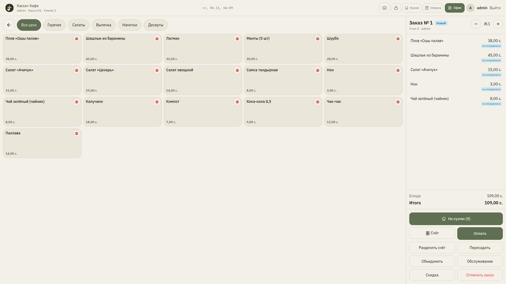

Касса+ для магазинови кафе в Таджикистане
Программа на Windows 10 или 11 принимает оплату без интернета. Владелец смотрит продажи в облаке app.kassaplus.online. Интерфейс на русском, таджикском и английском, суммы в сомони и дирамах.


Из чего состоит Касса+
Windows-ПК
Ставится на обычный компьютер с Windows 10 или 11 (64 бит).
Без интернета
Чеки и продажи идут на кассе, даже если интернет пропал.
Облачный кабинет
Кабинет владельца app.kassaplus.online.
RU, TJ и EN
Русский, таджикский и английский. Суммы в сомони и дирамах.
Продажи идут, даже когда интернет пропал
Касса принимает оплату на компьютере в магазине. Когда появляется связь, продажи уходят в облачный кабинет.
без интернета
Четыре редакции Касса+ под формат точки
Продукты, Оборудование, Кафе и Фастфуд.
Оборудование
- Товары и услуги на одной кассе
- Сметы с оплатой на месте
- Учёт монтажников

Кафе
- План зала и бронь
- Заказ с телефона официанта
- Кухня и разделение счёта

Фастфуд
- Сначала оплата, потом кухня
- Статусы: готовится, готов, выдан
- Экран выдачи

Настоящие экраны программы, данные демонстрационные

Приложения для Android
- «Касса+ Мониторинг» для владельца
- «Kassa+ Waiter» для официантов в редакции Кафе
Облачный кабинет владельца app.kassaplus.online
Изменения сами уходят на кассы.


Настоящие экраны программы, данные демонстрационные
Несколько магазинов
Все точки в одном кабинете.
Выручка и прибыль
Выручка, чеки, средний чек, прибыль, топ товаров.
Тревоги
Тревоги с касс в кабинете владельца.
Сотрудники и роли
Сотрудникам выдают доступ только к нужным разделам.
Меню и склад
Меню и остатки из облака.
Синхронизация
Изменения сами уходят на кассы.
Два варианта лицензии Касса+
Стоимость по заявке.
Лицензия Офлайн
На один компьютер.
- Один компьютер
- Работает без интернета
Подписка
С облаком и мониторингом.
- Облачный кабинет
- Мониторинг
Частые вопросы
Нужен ли интернет?+
Для продаж и печати чеков не нужен. Интернет нужен облачному кабинету и мониторингу: когда связь появится, данные отправятся сами.
Можно работать без облака?+
Да, для этого есть лицензия Офлайн. Это ключ на один компьютер без облака.
Какие есть лицензии?+
Офлайн на один компьютер и Онлайн, подписка на 1, 3 или 12 месяцев с облаком и приложением «Касса+ Мониторинг».
Что будет, если не продлить подписку Онлайн?+
Касса продолжит продавать. Облако и кабинет владельца отключатся до продления.
Можно несколько касс и точек?+
Да. Кассы одной точки работают с общей базой по локальной сети. Все точки, даже разных редакций, видны в одном кабинете владельца.
Какое оборудование подключается?+
Сканеры штрихкодов, весы, принтеры чеков и этикеток. В Кафе и Фастфуде есть экран кухни, в Фастфуде ещё экран выдачи.
Какой нужен компьютер?+
Windows 10 или 11, 64-битная версия.
На каких языках работает программа?+
На русском, таджикском и английском. Суммы в сомони и дирамах.
Как обновляется программа?+
По кнопке. Дополнительные кассы могут брать обновление с главной кассы по локальной сети.
Есть ли приложения для телефона?+
Да, для Android: «Касса+ Мониторинг» для владельца и Kassa+ Waiter для официантов в Кафе.
Сколько стоит?+
Зависит от редакции, лицензии и числа касс. Оставьте заявку, и мы подберём вариант.
Как подключиться?+
Оставьте заявку, получите логин в кабинет и код подключения, установите Касса+ на Windows и подключите кассу по коду.
Оставьте заявку
Напишите имя, компанию и телефон. Мы ответим и подскажем, какой продукт вам подойдёт. Стоимость по заявке.